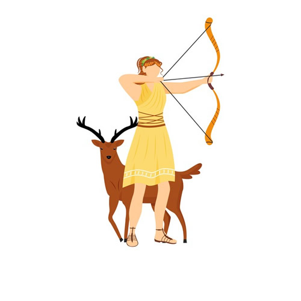

Artemis
A Deusa da caça
História do Personagem
Ártemis é a deusa da caça, da Lua, da castidade, do parto e dos animais selvagens. É uma das mais veneradas divindades da mitologia grega e na mitologia romana ela é chamada de Diana.
Considerada uma fantástica caçadora, Ártemis era cultuada por aliviar as doenças femininas, proteger as crianças e os jovens.
- Artemis é filha de Zeus e irmã de Apolo, Atena, Ares, Hermes, Hefesto, Dioniso e Héracles
- A sua origem é a Grécia antiga
- A deus também é referencia pela Lua